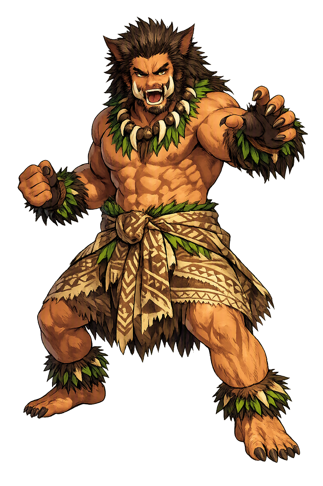

The Living Myth
Pig God, Agriculture · male fertility deity in Hawaiian mythology

Stories of Kamapuaa
Kamapua'a's cycle, best preserved in the O'ahu traditions Beckwith summarized and Westervelt printed, is a trickster epic with a strange ending: the ravager marries the destroyer, and the islands get a farm treaty.
Kamapua'a was born in Kaliuwa'a, the sheer valley of the Ko'olau range on O'ahu — the valley the Hawaiians call Sacred Falls — to the goddess Hina. From the first he was double: a child who was also a hog, fair-faced as a young chief, yet able to swell into an enormous boar whose bristles swept the ferns. He grew among the cliff country of the windward coast, and the cycle follows him as he raids the coastal plantations — pulling up taro and yam, devouring or carrying off the stored wealth of the district — while the farmers' traps and the chiefs' hunters fail against an animal that is also a man. (Beckwith, Hawaiian Mythology; Westervelt, Hawaiian Legends of Gods and Ghosts.) The myth's heart is in the name itself: kama, child; pua'a, pig — the beloved and the pest as one being, as any farmer who has watched a feral boar in the taro already knows.
The raids brought the hunt. The chiefs of the coast — in the longer versions led by 'Olopana, lord of the district — pursued the sacred hog into the mountains with spears, ropes, and traps, and Kamapua'a made fools of every formation: he vanished into fog, doubled back as a handsome stranger who ate at the pursuers' own fires by night, and was the boar again bursting their cordons by day. The versions collected in the nineteenth century delight in these escapes — the hog bleeding one moment into mist, the next a man laughing on the cliff — and they end the same way: the hunters quit, and the hog keeps the mountain. (Fornander, An Account of the Polynesian Race; Beckwith, Hawaiian Mythology.) What reads as a folk tale of an uncatchable pig is a charter: the uplands belong to the wild thing, and human order stops at the tree-line.
Then Kamapua'a came down the island chain to Pele. She mocked him as a hog, and he answered with his other nature: he wrapped Kīlauea in fog, drowned its fires in rain, and thundered at the crater until the volcano hissed and steamed in its own pit — the first power in the islands to beat Pele at her own game. At the height of the storm the cycle turns: Pele, outmatched, yields, and the hog and the volcano marry — fire taking water for its mate. (Beckwith, Hawaiian Mythology; Westervelt, Hawaiian Legends of Volcanoes.) The courtship is the cycle's masterpiece of imagery: the flood that courts the volcano — water proposing to fire, and fire, astonishingly, accepting.
The marriage was a constitution. By its terms, the cycle says, Pele's lava would keep to the forests and the uplands and leave the cultivated lowlands to live; and Kamapua'a's rains would water the farms and fatten the gardens he had once ravaged. The boar who destroyed plantations became the god who protects them — agriculture's own dangerous patron, the wild force inside cultivation that must be married, not killed. In the closing chapters he returns to O'ahu and to his mother Hina, honored as a god of plenty, his feral children the pigs of the mountain and his gentler children the crops of the field. (Beckwith, Hawaiian Mythology; Kamakau, Ka Moolelo Hawaii.) The myth understands something modern conservation is relearning: the destructive force is not the enemy of the garden but its spouse — and the only bad outcome is war without a treaty.
Pig God
Kamapua'a is the pig-god of O'ahu — shape-shifter, ravager of plantations, master of rain and flood, and the only suitor who ever beat Pele at her own element. He is agriculture's wild side: the animal that roots up the garden, and the storm that waters it.
Man and hog and fog: he changed form at will, and his tusk-furrows became the valleys of O'ahu's Ko'olau range.
Born in the sheer valley of Kaliuwa'a — Sacred Falls — to the goddess Hina; the cliffs are still his birthplace.
He stole and spread the garden's wealth — taro, yam, gourd — and finally bargained Pele's lava away from the farms.
He wooed Pele with rain until her fires hissed; their marriage joined storm and volcano in treaty.
From the original script to the living URL
Kamapuaa
The name survives in scholarly transliteration. Kamapuaa is the standard Polynesian romanisation, documented in academic sources — “male fertility deity in Hawaiian mythology”. Because the spelling uses only Latin letters, the form is the same in both ASCII and Unicode.
No indigenous writing system is securely attested for individual polynesian names. The form shown is a modern scholarly transliteration.
kamapuaa
The plain kamapuaa form is identical to the Unicode restoration. Because this name is already written in Latin letters, no diacritics, stress, or script information were lost — only capitalization differs.
Kamapuaa
The Unicode restoration does not need to recover lost marks for Kamapuaa. Its value is canonical spelling and consistent cataloguing, not the reconstruction of erased orthography. The domain is readable as-is to both DNS and humanity.
Kamapuaa.com
This restoration is written entirely in ASCII letters — no Punycode encoding stands between Kamapuaa and the DNS. The domain reads identically to machines and to human eyes.
Owned, ideal, and ASCII forms of Kamapuaa
Kamapuaa
The full Unicode restoration. kamapuaa.com is not in the PuniCodex collection — it is watched for release; if it drops, this temple upgrades to an owned flagship.
How Kamapuaa was spoken
How Kamapuaa is preserved in writing
No indigenous writing system is securely attested for individual polynesian names. The form shown is a modern scholarly transliteration.
Contribute scholarly provenance →Every agricultural people knows the animal in Kamapua'a: the creature that is wealth and destruction in one body — the pig that manures the field and roots it up, the rain that drowns the seedlings and fills the pond. What Hawaiian myth did with that knowledge is marry it. The boar does not get exterminated in this cycle; he gets married to the volcano and bound by treaty. It is among the most sophisticated land-use stories in this catalog: destruction domesticated not by force but by alliance, the pest made a spouse with terms.
Enter Extended Lore